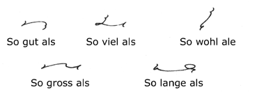

| Home Reporting A Judge’s Charge Dupraw’s Notes Sklarew’s Notes Zoubek’s Notes Pre-Anniversary Description Reference Material Brief Form List Anniversary Description Reading Material Reference Material Brief Form List Most-Used Phrases Simplified Description Brief Form List Dupraw on Note Size Diamond Jubilee Description Brief Form List Expert Brief Form List Series 90 Description Brief Form List Centennial Description Brief Form List Taquigrafía Gregg Gramálogos German Gregg Manual Esperanto Gregg Manual Brief Forms Irish Gregg Manual Gregg Group Gregg Learning Forum Ms. Letha’s SH Site Shorthand³ Omniglot's Entry Wikipedia's Entry Stenospeed Dictation Practice Andrew Owen |
60. Initials 61. Table of Pronouns
Derjenige is treated as two words, der being inflected as above, jenige being treated as an adjective. 62. The Syllable SIV The syllable SIV is written with the blend, that is, without any angle or vowel. 63. So ... als  So ... als is represented by s ... s when the three words join to form a good phraseogram. So is written in full if nothing is gained by the omission of O. 64. Expressing the Genitive The sign of the genitive (der or des) is shown by proximity (two substantives, or preposition and substantive). 65. Useful Business Phrases Many useful phrases used in business may be joined up on the lines of the foregoing, but phrasing must be sparing. 66. The Abbreviating Principle Notwithstanding the prefixes and suffixes for the omission of certain inflexions, some words are still too long. As much of the word is written as will readily suggest the word during transcription. This rule must be sparingly applied. The G is the consonant that may most frequently be omitted. 67. Disjoining Compound Words If compound words do not join easily, or if joined would come too far below the line, the parts of the word should be written close together. 66. Expressing Words with No Pure Diphthong
When two vowels not forming a pure diphthong come together, one is usually omitted; if one is a circle and the other is a hook, the circle is omitted. 69. Omission of U
Both short and long U are omitted between R and L and a straight downstroke. AU and short U are generally omitted in the body of a word before N, NG, NT and their corresponding long strokes. 70. PER and PRO
The vowels in the prefixes PER, PRO are omitted. There is the exception that when followed by T, D, K, G, the syllable PRO is written in full, and PER is written with the reversing principle. 71. Omission of Vowels in Word Terminations 72. Vowel Omission Between Reverse Curves A vowel is often omitted between reverse curves. 73. Prefixes and Suffixes
The vowel is omitted in MISS and DE. The prefix ALL is written in full if followed by a vowel; in other cases the L is omitted.
ALLEIN is represented by ALAN just as the suffix LEIN is represented by LAN. UR stands for UMHER in addition to its alphabetic meaning, with which it cannot clash. (See also Paragraph 22.)
HER is represented by R with the H dot, and HIN by N with the dot. The dot should not be omitted, and it should be written first. (See also Paragraph 73h.)
NACH is represented by NA; it is joined if followed by a consonant, otherwise disjoined.
LOS is represented by L; it is joined if followed by a consonant, otherwise disjoined. (h) The prefixes HER and HIN when followed by a second prefix are represented by H and N respectively, and the H dot is unnecessary; the H or N is written in the position that allows the second prefix to take its own position.
In the last word the H dot is inserted to distinguish the word from ENTGEGEN.
The following are examples:
AB as a prefix is written in full if followed by a vowel; if followed by a consonant it is represented by the A vowel. - Next Page - |


|
Preface About Gregg Shorthand Editor's Note A Talk with the Beginner The Alphabet Chapter I Unit 1 Unit 2 Unit 3 Chapter II Unit 4 Unit 5 Unit 6 Chapter III Unit 7 Unit 8 Unit 9 Chapter IV Unit 10 Unit 11 Unit 12 Chapter V Unit 13 Unit 14 Unit 15 Chapter VI Unit 16 Unit 17 Unit 18 Chapter VII /n Unit 19 /n Unit 20 Unit 21 Chapter VIII Unit 22 Unit 23 Unit 24 Chapter IX Unit 25 Unit 26 Unit 27 Chapter X Unit 28 Unit 29 Unit 30 Chapter XI Unit 31 Unit 32 Unit 33 Chapter XII Unit 34 Unit 35 Unit 36 |